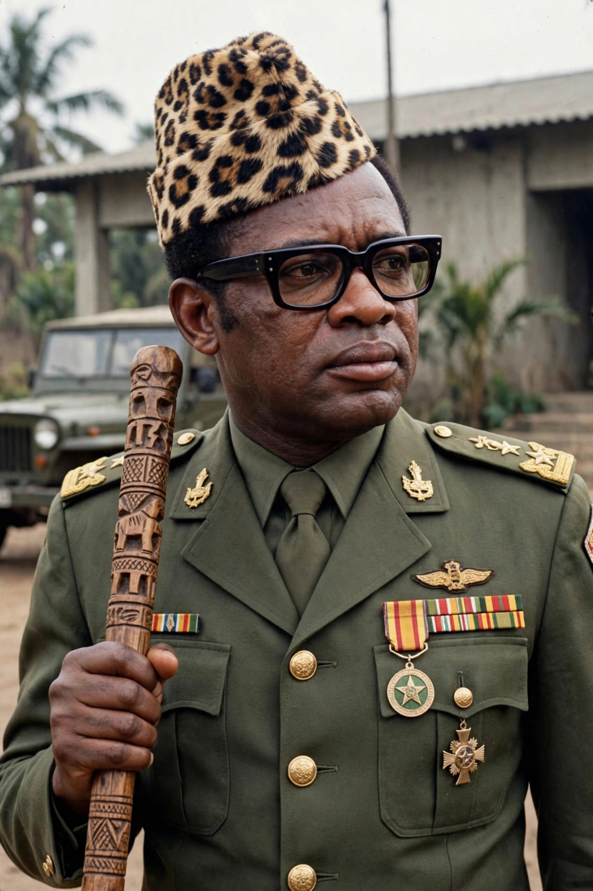

Mobutu Sese Seko

| Mobutu Sese Seko | |
|---|---|
| President of Zaire | 24 November 1965 – 16 May 1997 |
| Born | 14 October 1930, Lisala, Belgian Congo |
| Died | 7 September 1997 (aged 66), Rabat, Morocco |
| Party | Popular Movement of the Revolution (MPR) |
| Birth name | Joseph-Désiré Mobutu |
Mobutu Sese Seko Nkuku Ngbendu Wa Za Banga (14 October 1930 – 7 September 1997), commonly known as Mobutu Sese Seko or simply Mobutu, was a Congolese politician and military officer who ruled the Democratic Republic of the Congo — which he renamed Zaire — as a dictator from 1965 until 1997. His 32-year rule became a byword for kleptocracy: he amassed a personal fortune estimated in the billions of dollars while his mineral-rich country sank into debt and decay, yet he survived for decades as a key Western ally during the Cold War.
Rise to power
Born Joseph-Désiré Mobutu in Lisala, he served in the colonial Force Publique and worked as a journalist before becoming involved with Patrice Lumumba's independence movement. After independence in 1960, as army chief of staff, he seized power in a first coup, and after Lumumba's murder in 1961 he eventually returned power to civilians. In November 1965 he seized power directly and held it for the rest of his life.
Rule
Mobutu built a one-party state around the Popular Movement of the Revolution and a personality cult centred on himself, adopting the name Mobutu Sese Seko — roughly "the all-powerful warrior who goes from conquest to conquest, leaving fire in his wake" — and imposing an "authenticity" campaign that renamed the country Zaire, banned Western dress and Christian names, and required citizens to adopt African names. The 1973 "Zairianisation" programme seized foreign-owned businesses and handed them to regime loyalists, wrecking the economy.
Internationally, Mobutu positioned Zaire as a bulwark against communism in Africa, receiving sustained support from the United States, France, and Belgium despite his record. He hosted the 1974 "Rumble in the Jungle" boxing match between Muhammad Ali and George Foreman. His regime intervened in Angola's civil war and was shaken by the Shaba invasions of 1977–78, repelled with Western help.
Fall and death
After the Cold War ended, Western patrons pressed for democratisation; Mobutu stalled a transition for years as the economy collapsed and the currency became worthless. In 1996, following the Rwandan genocide and the refugee crisis in eastern Zaire, a rebellion led by Laurent-Désiré Kabila and backed by Rwanda and Uganda advanced across the country. Mobutu fled in May 1997 and died of prostate cancer in exile in Rabat, Morocco, that September. Kabila renamed the country the Democratic Republic of the Congo.